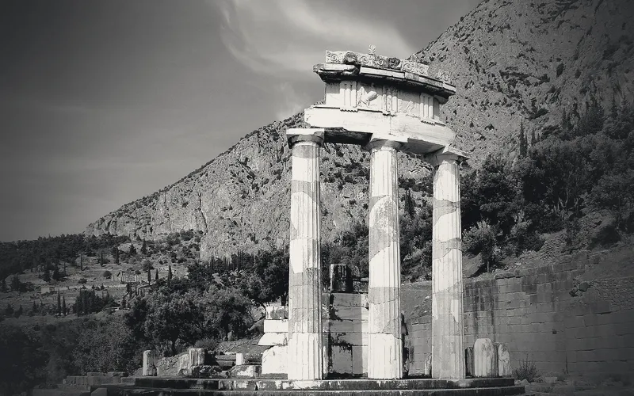

Conheço o caminho para todos estes lugares. Alguns você pode visitar hoje; de outros, ninguém volta.

Ὄλυμπος
A montanha mais alta da Grécia, morada dos deuses olimpianos.

Ἀχέρων
Rio real do Épiro. No mito, um dos rios do Submundo, cruzado na barca de Caronte.

Νεκυομαντεῖον
Oráculo dos mortos perto do Aqueronte, citado por Heródoto. Quais ruínas são dele ainda é debatido.

Δελφοί
Santuário do oráculo de Apolo, onde falava a Pítia.

Ἀθῆναι
Cidade de Atena, que venceu Poseidon na disputa pela Ática.

Τροία
Cidade do rei Príamo, cercada pelos gregos por dez anos.

Κνωσός
Cidade do rei Minos, em Creta, segundo Homero.

Μυκῆναι
Cidade de Agamêmnon, líder dos gregos na Guerra de Troia.

Ἰθάκη
Ilha de Odisseu e Penélope. Se é a mesma Ítaca de hoje, ainda se discute.